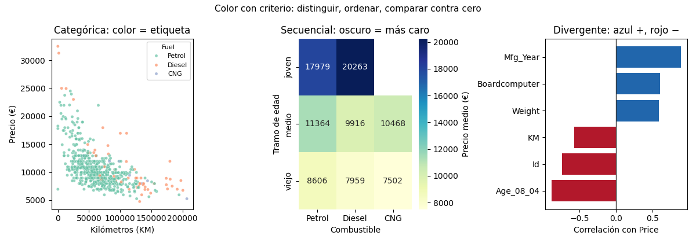

Bloque B · Análisis Exploratorio de Datos · Lección 0010 · mié 26 ago
Color con criterio: distinguir, ordenar, comparar
Win de hoy: usar las 3 paletas con criterio Wilke sobre Toyota:
categórica para Fuel_Type, secuencial para el heatmap edad×combustible y divergente
para correlaciones ±.
1 · El color también codifica (3 trabajos distintos)
El color no es decoración: es otra codificación visual, y hace tres trabajos que piden tres paletas distintas. Usar la paleta equivocada confunde tanto como el gráfico equivocado (0009):
- Distinguir etiquetas → paleta categórica (colores bien distintos, sin orden).
- Ordenar valores → paleta secuencial (de claro a oscuro).
- Comparar contra un centro → paleta divergente (dos extremos + neutro).
2 · Categórica: un color por etiqueta (Fuel_Type)
Tres combustibles, tres colores sin jerarquía: ninguno debe gritar más que otro. Funciona hasta ~6–7
categorías; con 319 modelos (0005) hay que agrupar primero. En el scatter KM vs Price el color revela
lo que la nube sola esconde: los diésel (pocos, caros) viven arriba a la derecha.
import seaborn as sns
sns.scatterplot(data=df.sample(600, random_state=42),
x="KM", y="Price", hue="Fuel_Type", palette="Set2")3 · Secuencial: oscuro = más (heatmap edad×combustible)
Cuando el valor tiene orden, la intensidad manda: claro = barato, oscuro = caro. El heatmap de precio medio por tramo de edad y combustible muestra el gradiente en dos dimensiones: joven+diésel arriba (20.263 €), viejo+CNG abajo (7.502 €). Detalle honesto: la celda joven×CNG queda vacía (no hay casos), y vacía se deja.
4 · Divergente: dos direcciones desde cero (correlaciones)
Para valores con centro significativo (correlación −1…+1, residuos ±), la paleta nace en el centro: azul lo
positivo, rojo lo negativo, neutro el 0. Las barras de correlación con Price se leen al instante:
año y equipamiento empujan arriba (azul), edad/KM/Id empujan abajo (rojo).
viridis, Set2) y no codificar solo con rojo-verde.
Para enfatizar un dato, mejor truco: todo gris + un acento (como los 9 KM≤100 de la 0004 (Bloque C)).5 · Figura: las 3 paletas en acción

Regenerar la figura (mismo resultado versionado en assets/img/toyota/):
python scripts/make_figures.py --only color-con-criterio6 · Quiz (auto-chequeo inmediato)
7 · Fuente primaria y cierre
Para profundizar (1 fuente): Wilke, Fundamentals of Data Visualization — capítulos de color (usos, paletas, daltonismo) (clauswilke.com/dataviz, también en RESOURCES.md del curso).
¿Algo no quedó claro? Preguntame al agente: qué paleta para tu caso, cómo chequear daltonismo, o cuándo el gris+acento le gana al multicolor. Esa pregunta vale más que releer.
Siguiente en el orden del Bloque B (misma clase, mié 26): 0011 Eje truncado — honestidad con ejes.